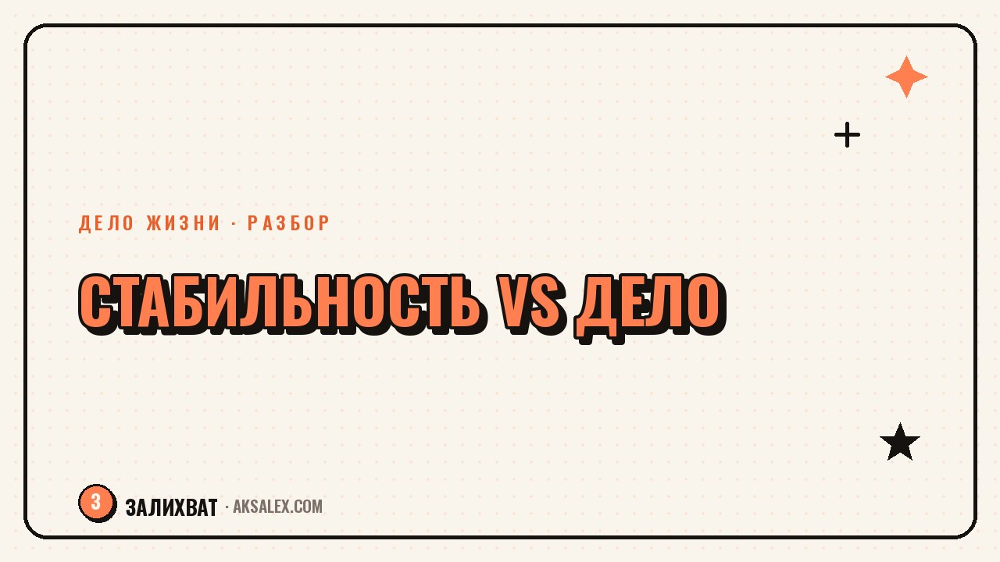

Как выбрать между стабильностью и любимым делом

Знакомая ситуация: есть работа, которая закрывает счета и даёт предсказуемость, и есть дело, которое по-настоящему тянет, но пока не приносит денег или приносит мало. Выбор между ними кажется огромным и бесповоротным, поэтому многие годами держат его в голове, не двигаясь ни в одну сторону. На практике это редко вопрос «или-или» - есть промежуточные варианты, и важнее разобраться не в том, что выбрать прямо сейчас, а в том, какие у тебя на самом деле ограничения и сроки.
Почему этот выбор ощущается как тупик
Когда ты думаешь о переходе от стабильной работы к любимому делу, мозг рисует картину «всё или ничего»: либо увольняешься и рискуешь всем, либо остаёшься и навсегда закрываешь вопрос. Из-за этой рамки решение кажется непропорционально тяжёлым, и проще отложить его на неопределённый срок, чем разбирать по частям.
На самом деле между «уволиться завтра» и «забыть про идею навсегда» есть много промежуточных шагов: сокращённая занятость, дело на вечерах и выходных, переход в смежную область внутри той же стабильности, тестовый период с финансовой подушкой. Разбор вопроса начинается не с выбора стороны, а с того, чтобы увидеть эти промежуточные варианты вообще.
Типичные формулировки тупика
- «Либо надёжность, либо я предаю своё дело» - ложная дихотомия
- «Если не решусь сейчас, будет слишком поздно» - страх упущенного момента
- «Мне нужно сразу зарабатывать так же, как на основной работе» - нереалистичный порог
- «Семья не поймёт, если я рискну» - чужое мнение вместо своих критериев
Что на самом деле стоит за словом «стабильность»
Прежде чем взвешивать стабильность против дела, полезно разложить, что конкретно ты называешь стабильностью. Это предсказуемый доход, медицинская страховка, статус в глазах окружения, привычный график, отношения с коллективом - всё это разные вещи, и не каждая из них одинаково важна именно тебе. Иногда «держит» не зарплата, а страх потерять социальный круг на работе.
Этот разбор важен, потому что часто можно сохранить то, что действительно нужно, и при этом двигаться к делу. Например, если держит именно страховка, а не сама должность - можно поискать формат с частичной занятостью, который её сохраняет. Если держит статус - стоит честно признать это и решить, готов ли ты временно пожертвовать видимостью ради дела.
Стабильность - это не одна вещь, а набор из нескольких разных опор. Пока ты не разберёшь, какие из них тебе важны на самом деле, выбор будет казаться крупнее, чем он есть.
Что на самом деле стоит за словом «любимое дело»
С другой стороны весов часто лежит не до конца проверенная идея. Прежде чем сравнивать дело со стабильностью, полезно понять: это дело уже приносит хоть какой-то результат - клиентов, первые деньги, обратную связь, - или оно существует только в воображении? Это принципиально разные ситуации, и вторую нельзя сравнивать со стабильной зарплатой напрямую.
Если дело ещё не проверено, честный следующий шаг - не увольнение, а тест. Выдели несколько недель или месяцев, параллельно с основной работой, чтобы понять, есть ли спрос, получается ли у тебя стабильно выдавать результат, нравится ли сам процесс, а не только идея о нём. Переход имеет смысл обсуждать только после такой проверки, а не до неё.
Вопросы для проверки идеи
- Кто-то уже платил тебе за это дело хотя бы раз?
- Сколько часов в неделю ты готов выделять на дело без ущерба для здоровья?
- Что будет, если первые полгода доход будет нестабильным?
- Нравится ли тебе рутина этого дела, а не только результат?
- Есть ли у тебя финансовая подушка хотя бы на несколько месяцев?
Промежуточные варианты вместо резкого выбора
Резкий переход - не единственный путь, и часто не самый разумный. Между полной стабильностью и полным погружением в дело есть реальные промежуточные схемы, которые снижают риск и дают время проверить гипотезу без паники.
| Вариант | Плюсы | Минусы |
|---|---|---|
| Дело на вечерах и выходных | Сохраняется доход, низкий риск | Медленный темп, усталость |
| Переход на сокращённую занятость | Больше времени на дело, частичный доход | Не везде доступно у работодателя |
| Финансовая подушка на 6-12 месяцев и полный переход | Полное внимание делу | Нужно заранее накопить, есть риск |
| Смежная область внутри стабильности | Близко к интересу, минимальный риск | Не всегда совпадает с настоящим делом |
Как принять решение, а не зависнуть в раздумьях
Если тема выбора крутится в голове годами без движения, вероятно, дело не в недостатке информации, а в отсутствии чёткого критерия для решения. Полезно заранее определить конкретные условия: например, «если за 6 месяцев тестового режима дело начнёт приносить хотя бы треть от зарплаты - перехожу на сокращённую занятость». Это превращает абстрактный страх в понятный план с датой и цифрой.
Важно и честно признать: универсально правильного ответа тут нет. Кто-то счастлив, выбрав стабильность и оставив дело хобби на вечера. Кто-то не может простить себе, что не рискнул. Задача не в том, чтобы угадать «правильный» вариант, а в том, чтобы решение было твоим - основанным на твоих реальных ограничениях, а не на чужих ожиданиях или абстрактном страхе опоздать.
Частые вопросы
Как понять, готов ли я рисковать стабильностью ради дела?
Проверь, есть ли финансовая подушка хотя бы на несколько месяцев и приносило ли дело хоть какой-то результат на практике, а не только в планах. Если обоих пунктов нет - разумнее начать с теста без увольнения.
Что делать, если семья не поддерживает переход к любимому делу?
Стоит отделить реальные финансовые риски, которые важно обсудить честно, от страха близких за статус или привычный образ жизни - это разные вещи. Решение в итоге твоё, но разговор с конкретным планом снижает тревогу у всех сторон.
Нужно ли сразу увольняться, чтобы заняться любимым делом?
Не обязательно и часто не стоит. Промежуточные варианты - сокращённая занятость, дело на вечерах, тестовый период с подушкой - позволяют проверить гипотезу с меньшим риском, прежде чем принимать резкое решение.
Как проверить, что любимое дело - это не только увлечение, а то, чем можно жить?
Попробуй выделить дело в параллельный проект на несколько месяцев и честно оцени три вещи: платят ли тебе за это, нравится ли рутина процесса, готов ли ты к нестабильному доходу первое время.
Почему выбор между стабильностью и делом так долго откладывается?
Чаще всего из-за рамки «всё или ничего», которая делает решение непропорционально страшным. Как только появляются промежуточные варианты и чёткий критерий для перехода, решение перестаёт казаться бесповоротным.
Раз тема оказалась полезной, вот что почитать следующим. Страх успеха незаметно тормозит твои цели. Разбираем, как он проявляется и что делать, чтобы перестать себе мешать.
Читать статью →а не вручную